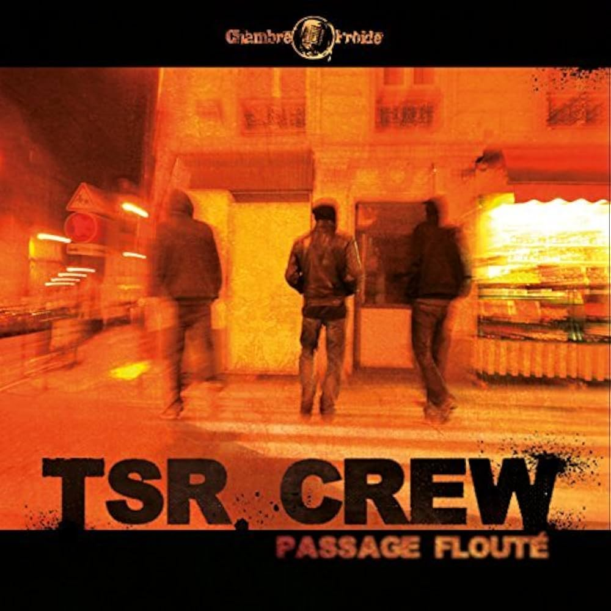

Ce site contient des liens d'affiliation. Si vous cliquez sur un lien et effectuez un achat, nous pouvons recevoir une petite commission, sans frais supplémentaires pour vous.

Biographie de l'artiste:
« Hugo TSR, il est là, qui le demande ? »
Ni véritable tête d’affiche de l’underground, ni totalement reconnu dans le mainstream, Hugo TSR impose son rythme, sa musique et sa carrière au fil des années et de ses albums irréprochables. Avec un flow limpide, une écriture soignée et un choix de productions toujours juste, il incarne aujourd’hui une figure incontournable du rap français. Il est respecté pour sa technique, sa sagacité et son indépendance. Considéré comme l'un des meilleurs kickeurs de sa génération, il fait partie des rares artistes à offrir un rap authentique, passionné, et artisanal, loin des productions standardisées.
Dans ses textes, Hugo TSR décrit le quotidien parisien, notamment celui du 18e arrondissement, où il a grandi. Son attitude, discrète voire mystérieuse, et la simplicité du personnage qu’il incarne, résonnent profondément avec son public. Il est un modèle de droiture, comme le souligne Nekfeu, dans "toujours le même comme Hugo TSR". Loin de la médiatisation, il remplit les salles de concerts sans publicité, ni interview, ni invités sur ses albums, cultivant son indépendance et sa liberté artistique. Son refus des artifices et des compromis attire un public fidèle, qui s’identifie à sa démarche et à ses valeurs.
Son nom, Hugo TSR, pourrait être une référence à « Tuerie Sur la Rythmique », un clin d’œil à la chanson Ugotrip, ou à « Tise, Shit et Rap », comme le propose son groupe, le TSR Crew. Mais au-delà de ces significations, Hugo TSR incarne avant tout un rap brut, authentique et fidèle à lui-même, une musique qui ne cherche pas à plaire à tout prix, mais à exprimer une vérité crue, sans concession.
Tracklist de l'album: